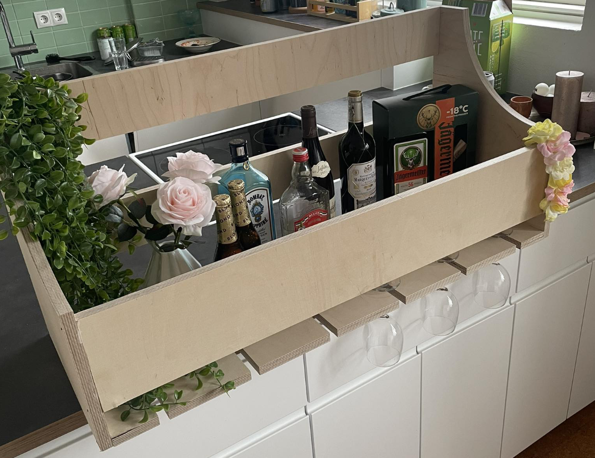

Lokaverkefni
Lokaverkefni - Hluti 1
Lokaverkefnið í Tölvustuddri framleiðslu var tvíþætt. Fyrst var að hanna og búa til eitthvað heildstætt verkefni með því að innvinkla eina af tveimur aðferðum hér að neðan. Í boði er að nota geislaskera eða 3D prentun til að bæta við íhlutum við verkefnið. Við áttum að velja eitt af þessu:
1. Hannið, teiknið, undirbúið og fræsið eitthvað með Shop Bot. Skipuleggið og skrásetjið feeds og speeds, toolpaths ofl fyrir það sem var hannað. Skrásetjið framkvæmdina og afraksturinn á sameiginlegt vefsvæði. Í boði verða 1500x1500mm af 18mm krossvið. (verður uppfært seinna með nánari upplýsingum). T.d. innréttingu, húsgagn, vegglist, grind.
2. Hannið, teiknið, undirbúið og fræsið mót í vax með Roland SRM-20. Undirbúið toolpaths, bæði roughing og finishing. Skrásetjið framkvæmdina og afraksturinn á sameiginlegt vefsvæði. Lesið MSDS og skipuleggið út frá þeim ef þörf þykir. Í boði verður 15x7x4cm vax ásamt sílikoni til mótagerðar. T.d. íhluti, leikfang, ílát, upphengt á vegg.
Hönnunarferli
Þegar verkefnið lá fyrir hittumst við og fórum aðeins yfir það sem við vildum fá útúr verkefninu. Við vorum sammála um að fræsa frekar en að gera mót. Ástæðan fyrir því var sú að við vildum framleiða hlut sem við gætum séð fram á að nota og höfðum byrjað ferlið á að skoða hin ýmsu húsgögn. Margrét stofnaði trello workspace fyrir okkur. Þar settum við inn þær hugmyndir sem við höfðum. Sem dæmi má nefna borðstofuborð, blómapott, sófaborð, drykkjuspil, hillu, minibar og vegglistaverk. Trello skjalið má finna neðar á síðunni.
Við ákváðum að hanna minibar, þar sem okkur fannst líklegt að það kæmi vel út. Við skoðuðum nokkra minibari á google og ákváðum að reyna að hanna minibar svipuðum þessum hér að neðan.
Við ákváðum að hafa hönnunina á minibarnum þannig, að hægt væri að nota hilluna til þess að geyma vínglös, og einnig vinflöskur. Hér fyrir neðan má sjá upprunulega hönnunina okkar á minibarnum.
Teikna í Fusion
Þá var komið að því að teikna minibarinn upp í Fusion 360 . Það var frekar auðvelt að teikna barinn upp í Fusion. Þetta voru sex body. Fyrsta skrefið var að setja upp parametra, til þess að geta breytt stærðinni á minibarnum. Svo var botninn teiknaður fyrst, og út frá honum við restin af bodyunum teiknuð. Hér fyrir neðan má sjá öll sex bodyin.

Þegar var komið að því að fræsa hlutinn, var byrjað á að fletja hlutinn út. Við tókum við eftir því að þykktin var ekki jöfn alls staðar. Í stað þess að breyta parametrum, fattaði hópurinn að það væri fljótlegra að cute-extruda aðeins af bitunum sem voru þykkari þar sem við vorum búnar að fletja hlutinn út. Þá var þykktin 18 mm alls staðar og hér fyrir neðan má sjá hvernig mini barinn leit út þegar búið var að fletja hann út. Einnig voru bitunum raðað betur upp til þess að spara efni, og ásinn færður í vinstra horn.
Toolpaths
Þegar kom að því að gera stillingar fyrir fræsun fékk hópurinn aðstoð frá kennara. Við bjuggum til tvö sett af stillingum, þar sem tveir mismunandi borar voru notaðir við fræsun. Markmiðið var að bora fyrst efri hlutann, þar sem borinn ýtti efninu niður til þess að rífa krossviðinn ekki upp. Svo var rest fræst þannig að efninu var ýtt upp. Þessar tvær stillingar gerðu hópnum kleypt að fá fallegan og sléttan skurð. Hér má sjá stillingar á milling í Fusion.
Fræsun
Fræsun gekk vel og hópurinn notaði krossvið. Passað var upp á að nýta krossviðinn sem best. Krossviðurinn var ekki alveg jafn, heldur var sveigja í plötunni, en til þess að leysa það, var platan skrúfuð niður og fest, en það var líka gert til þess að hún myndi ekki hreyfast. Þetta gekk allt saman nokkuð vel og var fræsirinn um þrjá klukkutíma að fræsa allt út.

Minibarinn var pússaður niður og límdur saman með tré lími, ásamt því að nagla bitina saman.

Hér má sjá lokaútkomuna.

Lokaverkefni - Hluti 2
Annar hluti verkefnisins var verkefnastjórnun. Í hópverkefnum er mikilvægt að hafa gott skipulag og koma þá forrit eins og Trello sér vel. Trello er gott hjálpartól, þar sem hægt er að passa að hver verkþáttur verði búinn á réttum tíma. Við reyndum eftir bestu getu að hafa verkefnið einfalt og byrjuðum strax á því að skipta verkþáttum niður. Við vildum þó fræsa verkefnið saman, ásamt því að finna hugmyndir að verkefni í sameiningu.
Margrét sá um að stofna trello og gantt rit, og fann hópur þannig út úr verkefnastkiptinu. Hópurinn rissaði mynd af minibarnum saman, en Hanna sá svo um að teikna upp hlutinn í Fusion. Þegar komið var að fræsingu, mættu allir meðlimir hópsins. Kennari áfangans hjálpaði okkur að velja rétt tól í Fusion til þess að framkvæma fræsinguna. Margrét sá um að pússa hlutinn og setja hann saman. Hanna setti upp og skráði inn á sameiginlegt svæði. Sabrina gerði plaggat. Þegar flest var komið inn á vefsíðuna, hittist hópurinn. Margrét og Sabrina, settu hlekk á þessa vefsíðu inn á sínar síður og sögðu frá sínu framlagi á þeirra síðum. Hópurinn gerði loks kynningarmyndband sem Sabrina klippti saman, og bjuggu til glærur fyrir kynningu.
Hér má sjá Trello vinnuskjalið: Trello vinnuskjal.
Hér fyrir neðan má sjá Gantt rit.
Kynningarmyndband
Hér má sjá kynningarmyndband af lokaverkefninu okkar.
Plaggat
Hér má sjá einblöðunginn.

Tímaskráning verkefnis
| Hluti verkefnis | Tími |
|---|---|
| Velja verkefni | 1 klst |
| Verkefnastjórnun | 3 klst |
| Undirbúningur | 3 klst |
| Parametrar | 1 klst |
| Teikna í Fusion og uppsetning | 3 klst |
| Fræsing | 4 klst |
| Samsetning minibars eftir fræsingu | 3 klst |
| Uppfæra vefsíður | 5 klst |
| Plaggat | 2 klst |
| Kynningarmyndband | 2 klst |
| Glærur fyrir kynningu og æfing | 3 klst |
| Samtals | 30 klst |
Hönnunarvernd
Öll skjöl eru aðgengileg þeim sem kann að hafa áhuga á að framleiða sitt eigið. Hinsvegar er hönnunin okkar og því má ekki breyta hönnun.
Hér eru hönnunarskjölin:
Vefsvæði annara í hópnum
Hér eru vefsvæði þeirra sem eru í hópnum.
Mitt framlag
Mitt framlag í verkefninu var að teikna upp minibarinn í Fusion og setja upp sameiginlegt svæði á vefsíðu fyrir hópinn.